How do you get a lonely, maybe low person to actually go? Take every decision off their plate except one: yes. Plans are strictly 1:1, in Mate and Date, with the same rules as Now — a vibe instead of a face, no chat — and a plan is on only when the other side has said yes too.
{{i:zap}}
1 · Proposed for you · Date or Mate
The app plans, you say yes
The matcher finds a compatible person who is free when you are, picks an activity you both chose and an open public venue within a 15-minute walk of both. You see their vibe badge, the match, the time and the place — one tap: Accept plan, or pick another venue and Suggest this place. It confirms only if they accept too.
{{i:calendar}}
2 · Your invitation · Date or Mate
Plan for later — you don't pick who
What, when (several days and times), where — send. It is offered, one at a time, to compatible people who are usually around at one of your times. The first one in picks a time and shows up as a vibe; you confirm.
{{i:users}}
3 · Group plans · Mate, 3–4 people production path
A small table, not a big room
Next: app-made plans for 3–4 at public venues, with I'm in, "2 of 4 going" as badges, going ahead only when the minimum is reached. The build ships 1:1 plans first; groups need density we won't have at launch.
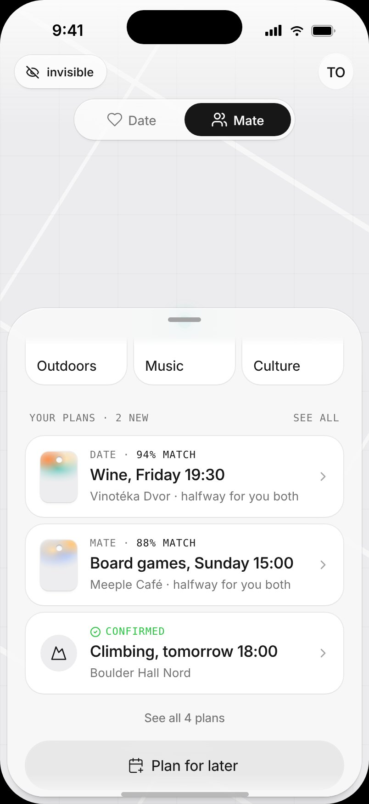
Your plans on the map sheet
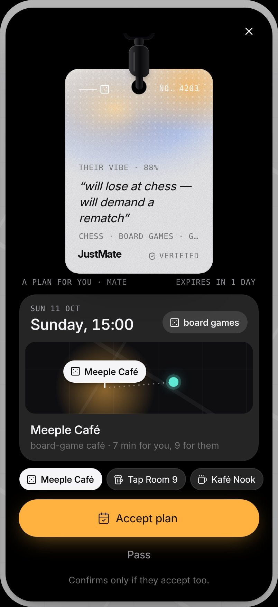
A plan for you vibe · time · halfway
You're both in mutual, like a match
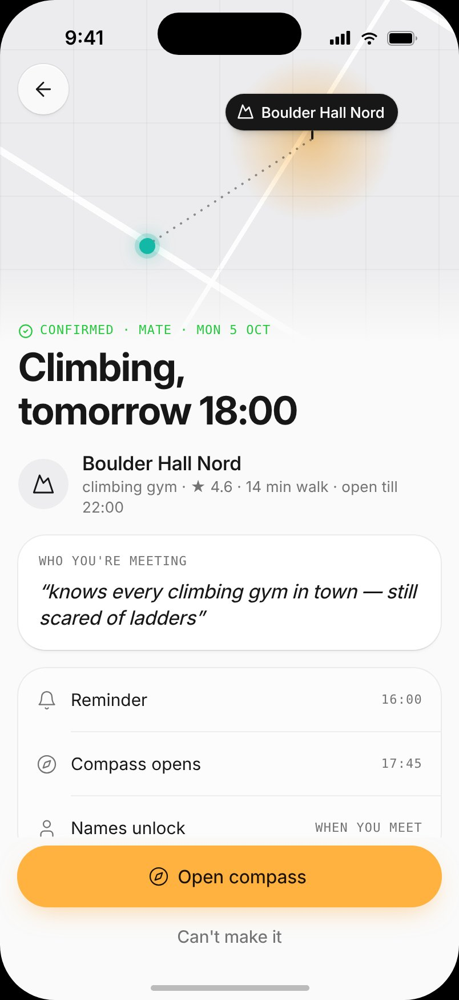
Confirmed compass 15 min before
Tomek's Sunday night: a proposal drops in — board games, Sunday 15:00, Meeple Café, 7 min for you, 9 for them — with a badge that reads "will lose at chess — will demand a rematch". He taps Accept plan; "waiting for them…" turns into you're both in. He didn't plan anything, didn't chat with anyone, and he knows someone will be there.
Plan for later: an invitation in four steps
For the days you do have the energy — or a thing you'd do anyway. The user decides what, when and where; JustMate decides who, from compatibility, and never shows faces or names.
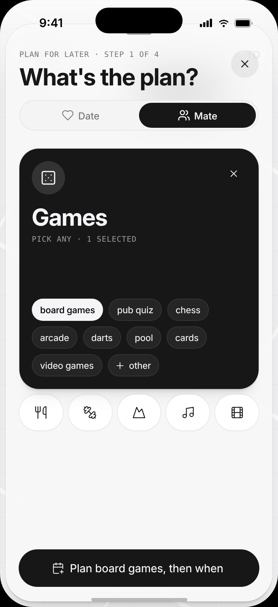
1 · What the same categories
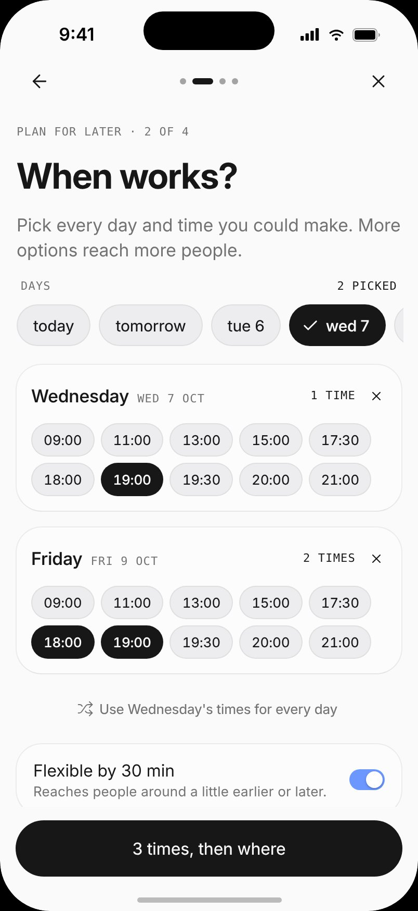
2 · When every time you could
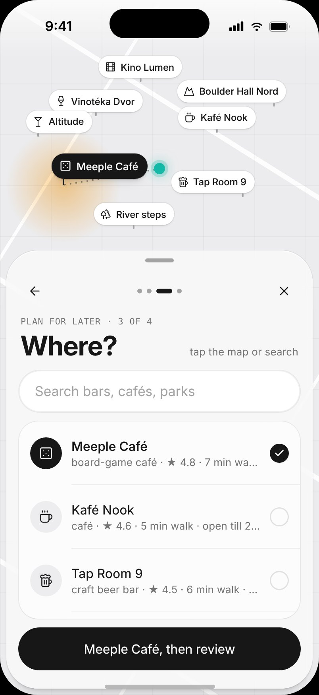
3 · Where public places nearby
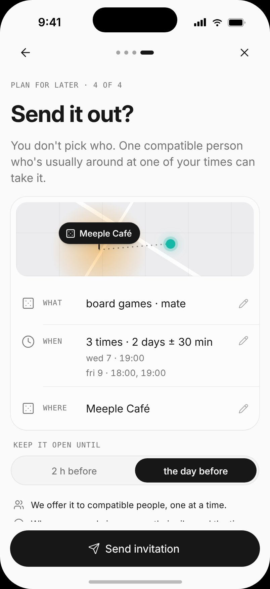
4 · Send you don't pick who
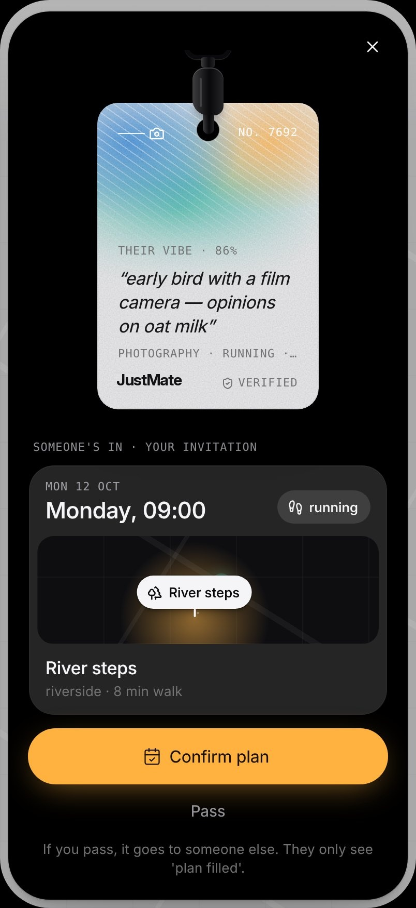
Someone's in confirm or pass
The rules of an invitation
More options reach more people. Pick several days and several times each; "flexible by 30 min" reaches people around a little earlier or later.
Offered one at a time to compatible people who are usually around at one of your times. They see a vibe, a place and a time — nothing else.
The first one in picks a time and appears as a vibe badge with the match. You confirm, or pass — then it goes to someone else, and they only see "plan filled".
Open until 2 hours or the day before; withdraw any time.
Once a plan is confirmed
The plan card shows the place, the walk and who you're meeting — as a vibe. A push reminder 2 hours before is M1.
The compass opens 15 minutes before the start: the last hundred metres work exactly like Now — bearing and bucket, never a pin.
Names unlock when you meet, with the distance you walked and an ice-breaker line. Same again next week? is one tap; scheduling it and a mutual Keep in touch are M1.
Can't make it is one tap too. The other side sees "plan cancelled" — no reason asked, no blame.
Group plans · Mate production path
For people for whom a 1:1 feels like too much: plans for 3–4 at a public venue, with I'm in and "2 of 4 going" shown as badges. A plan is on only once the minimum is reached; from an hour before, a still in? check — if it drops below the minimum, everyone is told before they leave. At the venue: I'm here, status chips ("on my way", "5 min late") instead of chat, and Show your badge to find the table.
Copy rules
Nobody is ever told "X declined" or "X left". A passed proposal simply expires, a passed invitation reads "plan filled", a dropped seat changes "3 of 4 going" to "2 of 4 going" silently.
Motivation design: one mechanic per barrier
Inspired by behavioural activation — small, scheduled, concrete activities — as a design principle, not a clinical claim.
Barrier
Mechanic
Stage
No energy to initiate
The app proposes, you only say yes. An activity you both chose, a time you're both free, a venue within a walk of both. One tap.
M0
"Will anyone come?"
Mutual by construction: a plan is confirmed only when both say yes, on both phones at once.
M0
Fear of being stood up
Cancelling is one tap and reads "plan cancelled" — no reason, no blame; a reminder 2 h before.
M0reminder M1
Judgment
A vibe, never a face. You don't pick who takes your invitation, and nobody picks you by a photo.
M0
Talking is hard
Activity-first plans: board games, climbing, a walk, a quiz — something to do side by side.
M0
Day-of hesitation
The compass opens 15 minutes before — the last hundred metres become a game, not a search for a stranger.
M0
One meeting doesn't fix loneliness
Same again next week? after every meeting; later circles — the same 3–4 people weekly for four weeks.
M0circles v1
A small push · spam
Venue perk on check-in, paid by the venue; proposals expire on their own and declines are silent.
M1
Plan lifecycle
A plan stores who is meeting, never where they are.
Plan matching
The Now loop's hard gates and the explainable score, plus an overlap in free times. The venue fits the activity and sits within a 15-minute walk of both ("7 min for you, 9 for them"); plans show the match %.
Availability. No calendars are read: JustMate uses the times people say they're usually free, minus plans they already have. The tap confirms the rest — a proposal is on only when both accept; whoever takes an invitation picks the time.
Places
18 public venues in Kraków, tagged with activities and opening hours; "places for you" are ranked by your interests. Plans only happen at public venues, never at an address. M1 Partner venues add slots and perks.
05 The Now loop
Consented serendipity
For when you're already out. happn proved proximity, Breeze proved skipping chat, live-map apps proved people love maps. Nobody assembled them: real-time, mutual, faceless, on foot.
1 · Select invisible by default
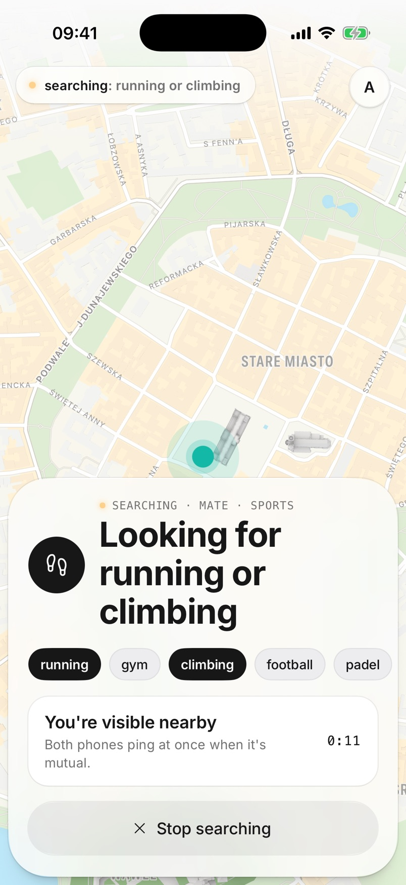
2 · Search visible only now
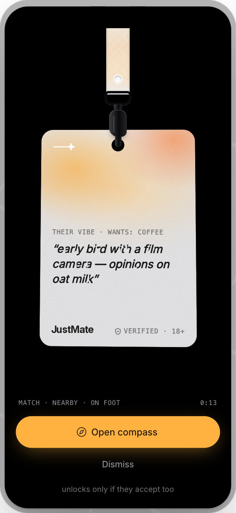
3 · Match both phones, 45 s
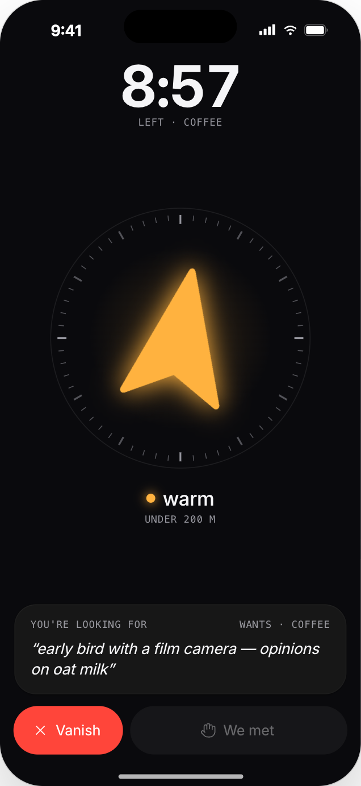
4 · Compass bearing, never a pin
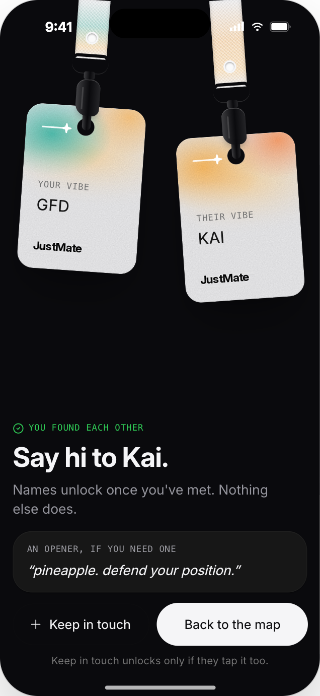
5 · Post-meet names unlock
Pick what you're up for, deliberately. Default is invisible. Choose Date or Mate, a category, one or more intents, then Find people for {picks}. Session-scoped, never ambient.
Watch the map warm up. A soft heat field shows where compatible people search for the same thing. No list, no browsing — scarcity of information is the feature.
The ping. Two compatible people, both searching, picks aligned, within walking range → both phones buzz at the same moment. Each sees only the other's badge: "their vibe · wants: beer" and their vibe line.
Mutual accept. The compass unlocks only if both tap Open compass within 45 s. A dismiss is never forwarded — the other side sees "offer expired", never "declined".
The walk. An arrow with hot/cold colour and escalating haptics; distance is a bucket. Ten-minute window.
Meet. Talk. At burning, We met unlocks first names, the distance you walked and an ice-breaker line written from what you share; Same again? is one tap. Then positions are discarded.
Vanish at any moment: one tap, no confirmation, the session is destroyed for both.
Distance as a game, deliberately imprecise
Parameter
Value
Match radius (walk 5 / 10 / 15 min)
400 / 800 / 1200 m
Offer to accept
45 s
Compass session
10 min
Pair cooldown after any end
5 min
Search auto-stop
30 min
Position updates (search / session)
2 s / 1 s
All thresholds are sent by the server in config, so tuning is a restart, not an app rebuild.